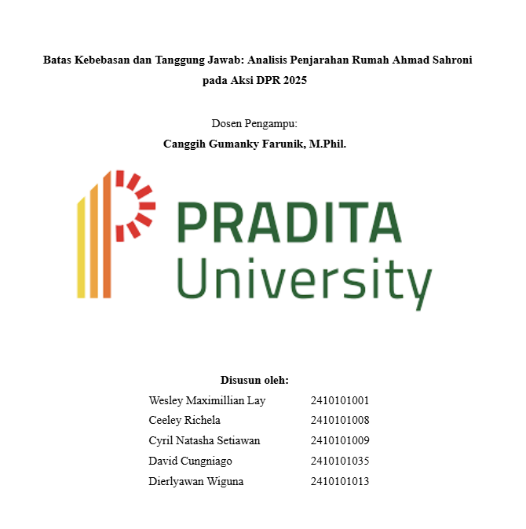

Batas Kebebasan dan Tanggung Jawab: Analisis Penjarahan Rumah Ahmad Sahroni pada Aksi DPR 2025
Sebuah studi kasus mendalam mengenai dinamika demokrasi, etika penyampaian pendapat di muka umum, dan implikasi hukum dari tindakan anarkis dalam konteks kewarganegaraan Indonesia.
5 Anggota Peneliti
Studi Kasus Hukum
2025
Anggota Kelompok Peneliti